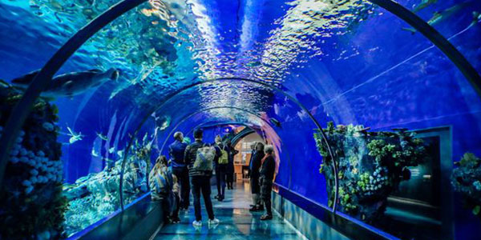
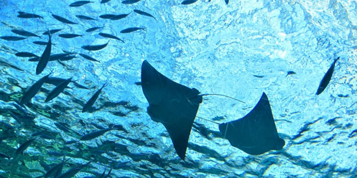

- 
- 
この2020年1月23日に
新しいアミューズメントが名古屋市内にオープンします。
稲永水族館について
展示生物との出会いを通じ、生命の不思議さと海の豊かさを感じてください
稲永水族館は、南館と北館のふたつの施設からできています。
南館テーマ
南館の展示テーマは「南極への旅」です。名古屋を出発し南極に至る地球を縦断する旅の中で出会うさまざまな海の環境を5つに分け「日本の海」「深海ギャラリー」「赤道の海」｢オーストラリアの水辺｣「南極の海」の飼育展示をしています。ここではそれぞれ大変異なった環境に適応し生きているさまざまな生命に出会えます。
北館テーマ
北館の展示テーマは「35億年はるかなる旅?ふたたび海へもどった動物たち?」です。悠久な生命進化の歴史の中で、水中生活に適応し素晴らしい知性を発達させ、陸上の人間の地位にも匹敵するといわれる海洋の生活者である鯨の世界を、さまざまな手法を用いて紹介しています。
目の前で展開される本物の生き物たちだけが持つ生命の躍動感やその複雑さ多様さに自然を感じ思いを巡らせることは、命あるものたちと共に未来へと歩んでいくことでもあるはずです。 稲永水族館は、そんな水中生物たちの世界に出会える水族館でありたいと願っています。